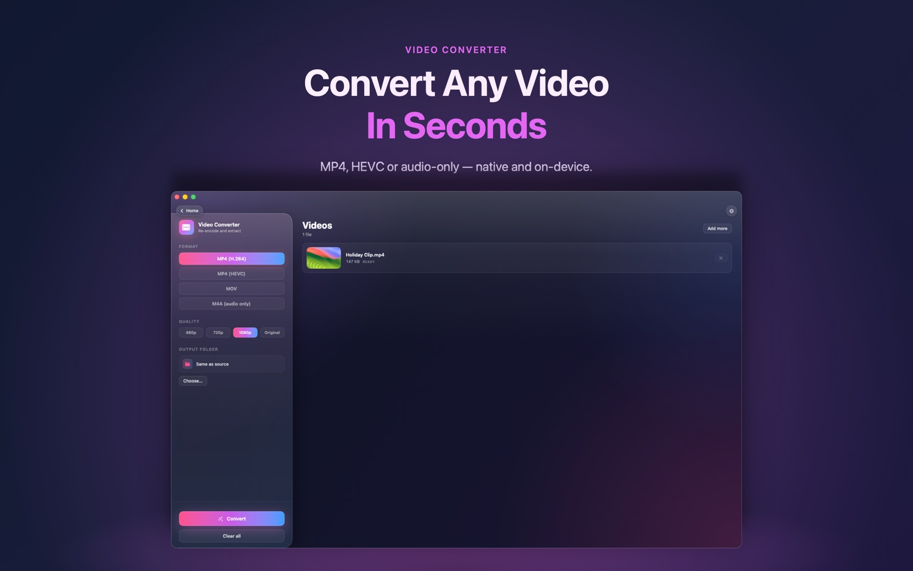

Screen recordings and iPhone clips that won't play somewhere else? Knack converts them to MP4, HEVC or audio-only, natively.

Yes. Video Converter is one of Knack's free tools.
No. Conversion uses Apple's AVFoundation on your Mac.
Yes. Choose the audio-only output, or use Knack's Audio Converter.
Video Converter is one of more than twenty native tools in Knack — converters, PDF tools, OCR, AI photo tools and more, all running on your Mac.
Get Knack